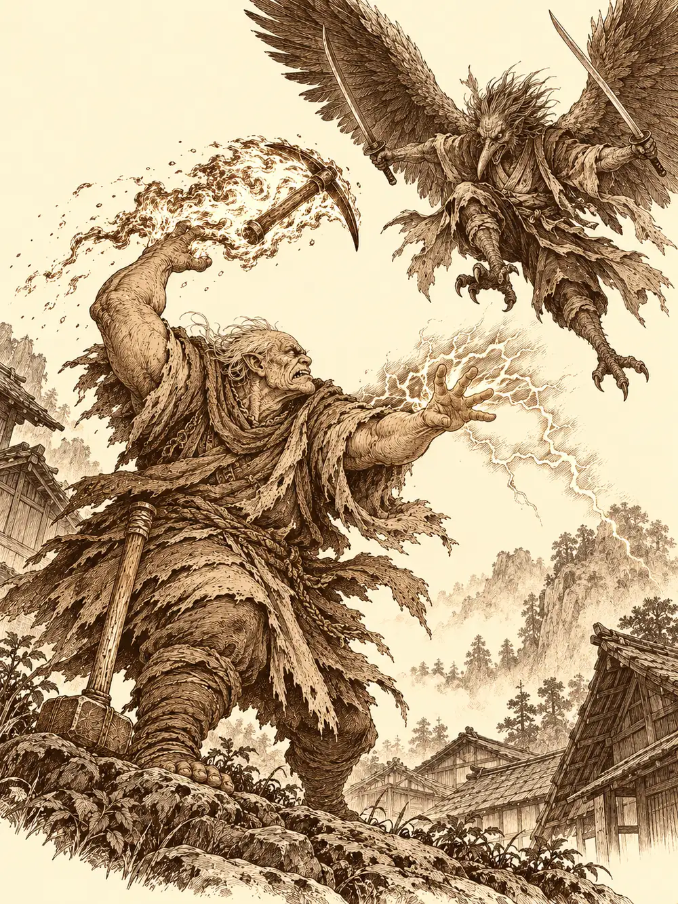

Capítulo 102
Recaudación
Libro VII · La Reina Cuervo
Corco había puesto delante de Gur un montón de papeles escritos con una letra que parecía arañada en la madera, y le hacía preguntas de examen.
"¿Cómo se hace uno líder de una horda?".
"Con coco", respondió Gur.
El viejo le dio con el martillo en la rodilla. El líder era el más fuerte. Lo demás eran tonterías. Corco estaba tan sordo que había que gritarle al oído, y como no sabía cuándo volvería a encontrarse a su discípulo, que siempre andaba talando árboles por ahí, había decidido dejarle por escrito todo lo que recordaba de la horda. Lo escribía en orco. Gur reconoció las letras de su infancia y, por un momento, le vinieron a la cabeza las palizas de su padre. Corrigió a su maestro un par de símbolos. Corco se ofendió y le preguntó quién era el abuelo allí.
Sobre el hombro de Gur iba Kuma, su pequeño maestro rojo. De pronto se dobló y vomitó. Lo que le salió de la boca era lava, y abrió un agujero en el suelo de la base.
"No me acuerdo muy bien", dijo, y se quedó tumbado sobre la mesa, agotado.
Seguía sin expulsar la esfera que se había tragado. Banzo, al oírlo, recordó que la niña también se había comido una y que el otro día, al eructar, casi había provocado un terremoto.
En la habitación del goliat dormía, desde hacía dos días, el sectario que habían capturado en el templo de los tanuki. Banzo había tenido que dejarlo inconsciente veintisiete veces para que no se escapara. Le pidió ayuda a Gelbreak, que lo paralizó con un chasquido de los dedos. Entonces llegó un mensajero: Rua quería verlos.
En palacio, Banzo cargaba al sectario al hombro como un saco y llevaba en la otra mano una bolsa grande. Rua los recibió sentada, sin nobles alrededor, ocupándose de todo mientras su marido seguía en cama. Gur, que no terminaba de entender quién mandaba allí, la saludó como si fuera ella la shogun.
Banzo dejó al prisionero a sus pies.
"Te traigo a uno de los sectarios que encontramos el otro día. Al jefe no he podido traértelo vivo, pero..."
Volcó la bolsa. La cabeza del líder rodó por el suelo hasta detenerse delante de la esposa del shogun. Rua se echó hacia atrás. Los samuráis desenvainaron y apuntaron al goliat.
"Esto es lo que hay en Kuroto, Rua. Tus aldeas y tu gente sufren esto día tras día. Lo que hay que hacer es acabar con ellos de una vez. Hay que atacar".
Rua le pidió, con la voz temblando, que recogiera aquella cabeza. Banzo la recogió y se quedó arrodillado delante de ella. Ella le explicó que una ofensiva costaba mucho más de lo que él creía, que por cada sectario que eliminaban salían tres, que no se cruzaba sin más hacia el otro lado para luchar contra un demonio que había arrasado aquellas tierras mil años atrás. Banzo admitió que no era el más listo de los cazadores, pero dijo que tenía corazón, y pidió que se sentaran todos a pensar algo que el enemigo no esperara. Rua se calmó un poco. Lo hablaría con los nobles, con el ejército, con los mandos del Sur, incluso con Aka. Banzo le pidió perdón por las formas.
Lo que Rua necesitaba aquel día era otra cosa. La guerra contra Otakemaru los obligaba a apretarse el cinturón y había que cobrar tributos en algunos pueblos del Sur. Quería quinientas monedas de oro de una aldea llamada Takuromo, a dos días del campamento.
"Por favor, intentad que la gente no sufra".
Jin miró a los tres musculosos que lo rodeaban y dijo que iban a parecer más matones que recaudadores. Gelbreak, cuando empezaron a discutir quién era útil y quién sutil, hizo callar a los dos orcos con un gesto y los sacó de la sala.
En el campamento del Sur llovía. Gur levantó la cara al cielo con la lengua fuera; hacía mucho que no le caía agua encima. Compraron provisiones en la taberna a precios que daban vergüenza, porque la guerra lo había encarecido todo. Gelbreak quiso convencer a Gur de que pagara la comida de todos con una cadena de razonamientos tan enrevesada que acabó funcionando; Gur pagó mal, contó peor y la cantinera, que no era mala persona, le devolvió el cambio correcto. Por el camino, Jin le explicó a Gur que no valían lo mismo veinte monedas de plata que veinte de oro. Gur todavía no se sabía los números, pero eso lo entendió. Corco iba detrás criticando a los jóvenes que entrenaban, porque en su época todo se hacía mejor.
Takuromo era un puñado de casas pequeñas entre montañas, con huertos que apenas daban nada, un estanque y una capilla humilde. La gente los miró pasar sin hostilidad y sin esperanza. Quien hablaba por el pueblo ante el shogunato era el monje budista de la capilla.
"Sé que debemos quinientas monedas de oro", les dijo. "Pero no llegamos ni a cincuenta".
Unas criaturas aladas bajaban del Sur por las noches, mataban a alguno, destrozaban los cultivos. Por eso no había comida que vender. Gur propuso traer él la carne y que los del pueblo se la cocinaran a cambio de dinero. El monje lo miró sin entender. Jin le dijo que no se podía arreglar así.
"No vamos a quitarle a esta gente lo poco que le queda", dijo. "Primero los ayudamos. Luego veremos".
Banzo sugirió al monje que se llevara a su gente más al norte, donde la cúpula los protegería. El monje le preguntó si no eran ellos, los cazadores, los que iban a proteger los pueblos de las tropas de Otakemaru. A Banzo le dolió y agachó la cabeza. Pidieron alojamiento para unos días. Les dieron una casa vacía.
Esa tarde Banzo salió a cazar arrastrando a Gelbreak del brazo. Olfateó el suelo como un perro hasta dar con el rastro de un jabalí, y cuando lo encontraron le pidió al drow que lo dejara quieto. Gelbreak se rio, murmuró unas palabras y el animal se quedó clavado en mitad del bosque; Banzo se le echó al cuello. Le llevó el jabalí a una vecina y le pidió que hiciera una hoguera para quien quisiera acercarse. No daba para todo el pueblo, pero hubo algo para picar.

Gur y Corco fueron a por leña. Mientras Gur golpeaba un tronco con su espada nueva, el viejo le contó por fin por qué había cruzado el mar. Trabajaba en una mina con sus compañeros cuando aparecieron unas criaturas, algo entre oso y topo, enormes. Habían muerto muchos. Una había escapado herida, y él la estaba buscando para demostrar que lo que había visto era verdad. Gur le aseguró que si encontraba uno lo tiraría al suelo de un golpe. Corco le recordó que el goliat también era grande y había caído, y que si a él lo había vencido una vez era porque le dolía la espalda.
Por la noche montaron guardias. Gelbreak se quedó en la entrada del pueblo; no necesitaba dormir. A Banzo le tocó el otro lado y se durmió. Gur se despertó con hambre a medianoche, salió a buscar algo que cazar y se encontró al drow, que lo convenció de que no saliera. Hablaban de si aquellas criaturas se podrían comer cuando Gelbreak levantó la vista hacia los desfiladeros.
"Atento, Gur. Sin girarte".
Gur se giró de golpe.
Sobre un tejado apareció una silueta con dos katanas y unas alas negras. Sonreía. Gelbreak corrió a despertar a Corco de una patada y gritó para avisar al resto.
Eran tengu. Bajaban de las alturas y caían sobre los tejados. Uno sorprendió a Banzo dormido y le metió dos tajos antes de que abriera los ojos. El más peligroso tenía las alas rojas y manejaba dos katanas que soltaban chispas eléctricas al cortar; se lanzó sobre Jin y le asestó cuatro golpes seguidos. Corco se hinchó de furia hasta parecer el doble de grande, prendió fuego a su pico y se lo arrojó a uno de los que volaban; luego le lanzó relámpagos. Al tengu de alas rojas ni el fuego ni el rayo le hacían nada. El frío sí lo hería.
Gur, enfadado porque aquellos bichos no lo dejaban comer, señaló con el dedo al primero que vio y le salió una bola de fuego que alcanzó al tengu, a Banzo y a Corco, y que la criatura absorbió como quien se calienta las manos. Banzo, ya despierto y furioso por haberse dormido, sujetó a uno de los adversarios con la cadena de su arpón. Gelbreak dejó paralizado al de alas rojas y Jin aprovechó para golpearlo. Pero el drow quiso lanzar otro conjuro, soltó el primero y la criatura volvió a moverse. Jin cayó al suelo.
Corco mató entonces al tengu que Gur consideraba suyo.
"La presa era mía", dijo Gur.
Y descargó el hacha sobre el viejo. Lo golpeó a propósito, con todas sus fuerzas, hasta tirarlo al suelo inconsciente. Luego golpeó también a Banzo. Gelbreak, que estaba preparando algo para pararlo, no llegó a tiempo. Entre unos y otros terminaron con el último tengu, pero en el suelo quedaron Jin y Corco, y el goliat apenas se tenía en pie, con heridas de los dos bandos.
Cuando se le pasó la furia, Gur soltó un grito largo de desesperación y se quedó quieto. Fue a buscar una poción y se la dio a Corco. El viejo abrió los ojos y lo agarró del cuello.
"¿Me haces esto a mí? Estamos en el mismo equipo".
"Me cegó la ira".
Gelbreak se arrodilló junto a Jin, le puso la mano en el pecho y lo trajo de vuelta con un hechizo.
"Ya le darás las gracias algún día a ese estúpido drow".
Banzo se le acercó y le preguntó si había intentado frenar a Gur. El drow le habló al oído: a veces se le iba un poco y había que calmarlo. Hablaba de él como de su primer amigo. El goliat le dio un abrazo que le dolió en todas las heridas.
Gur miraba los cuerpos de los tengu y preguntó si se podían comer. Gelbreak se inventó en el acto una historia: Hayate y Erk se habían puesto enfermos por morder a un bicho de esos, el clérigo que los curó había muerto, y si Gur se comía uno, también moriría. Era mentira de principio a fin, pero Gur se quedó sin cenar.
La victoria no había creado quinientas monedas. Banzo y Jin propusieron pagar entre todos, pero solo si los vecinos aceptaban marcharse al norte. Gur y Corco se negaron, y el monje también: ¿iban a cobrarles y además echarlos de sus casas? Gur se puso del lado del pueblo.
"Igual que yo quiero hacer mi horda y nadie tiene que venir a quitarme mi sitio. Si ellos no quieren irse, aquí nadie se va de su casa".
Banzo lo escuchó y lo entendió. Los habitantes se quedaron. Al salir del pueblo, Gur se despidió de ellos con la mano y les recordó que no se comieran esos pájaros, que estaban podridos.
En palacio, Rua los recibió con la pregunta de siempre.
"¿Habéis conseguido lo que os pedí?".
Gur le tendió la mano. Llevaba quinientas monedas de oro. Eran suyas.
"Me he hecho cargo yo".
Rua le dio las gracias y le ofreció comer en las cocinas de palacio. Gur le cogió las dos manos, se las sacudió, saltó por encima de quien tenía delante, se tiró al estanque del baño para quitarse la sangre y desapareció hacia la cocina. Rua explicó a los demás que la capital estaba llena y no podía acoger a todos los desplazados del Sur. Hacía falta saber quién estaba detrás de los ataques, no solo responder a cada uno. El sectario quedaba en palacio para ser interrogado; todavía no había dicho nada.
Jin preguntó si aquel trabajo se cobraba. Se dio la vuelta antes de oír la respuesta. Desde el fondo del palacio llegaban ya las risas de las cocineras y la voz de Gur pidiendo que le pusieran más.